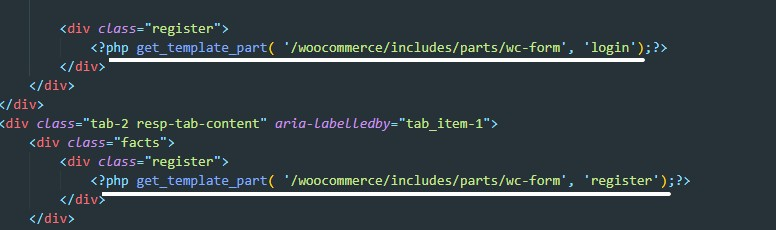

Форма авторизации и регистрации
Для того что бы вывести формы регистрации и авторизации в наш html код мы воспользуемся функцией get_template_part. Эта функция просто возвращает путь до нашей папки с темой. Далее мы прописываем путь до формы регистрации и авторизации которые уже существуют a woocommerce

В примере мы ссылаемся на путь: /woocommerce/includes/parts/wc-form т.е. мы должны создать по этому пути два файла wc-form-login и wc-form-register
Код файла - wc-form-register
<?php
if ( ! defined( 'ABSPATH' ) ) {
exit; // Exit if accessed directly.
}
wc_print_notices();
?>
<form method="post" class="register">
<?php if ( 'no' === get_option( 'woocommerce_registration_generate_username' ) ) : ?>
<p class="woocommerce-form-row woocommerce-form-row--wide form-row form-row-wide">
<label for="reg_username"><?php esc_html_e( 'Username', 'woocommerce' ); ?> <span class="required">*</span></label>
<input type="text" class="woocommerce-Input woocommerce-Input--text input-text" name="username"
id="reg_username"
value="<?php echo ( ! empty( $_POST['username'] ) ) ? esc_attr( wp_unslash( $_POST['username'] ) ) :
''; ?>"/><?php // @codingStandardsIgnoreLine ?>
</p>
<?php endif; ?>
<p class="woocommerce-form-row woocommerce-form-row--wide form-row form-row-wide">
<label for="reg_email"><?php esc_html_e( 'Email address', 'woocommerce' ); ?> <span
class="required">*</span></label> <input type="email"
class="woocommerce-Input woocommerce-Input--text input-text" name="email" id="reg_email"
value="<?php echo ( ! empty( $_POST['email'] ) ) ? esc_attr( wp_unslash( $_POST['email'] ) ) :
''; ?>"/><?php // @codingStandardsIgnoreLine ?>
</p>
<?php if ( 'no' === get_option( 'woocommerce_registration_generate_password' ) ) : ?>
<p class="woocommerce-form-row woocommerce-form-row--wide form-row form-row-wide">
<label for="reg_password"><?php esc_html_e( 'Password', 'woocommerce' ); ?> <span class="required">*</span></label>
<input type="password" class="woocommerce-Input woocommerce-Input--text input-text" name="password"
id="reg_password"/>
</p>
<?php endif; ?>
<p class="woocommerce-FormRow form-row">
<?php wp_nonce_field( 'woocommerce-register', 'woocommerce-register-nonce' ); ?>
<button type="submit" class="woocommerce-Button button" name="register"
value="<?php esc_attr_e( 'Register', 'woocommerce' ); ?>"><?php esc_html_e( 'Register', 'woocommerce' ); ?></button>
</p>
</form>
Код файла - wc-form-register
<?php
if ( ! defined( 'ABSPATH' ) ) {
exit; // Exit if accessed directly.
}
wc_print_notices();
?>
<form method="post" class="register">
<?php if ( 'no' === get_option( 'woocommerce_registration_generate_username' ) ) : ?>
<p class="woocommerce-form-row woocommerce-form-row--wide form-row form-row-wide">
<label for="reg_username"><?php esc_html_e( 'Username', 'woocommerce' ); ?> <span class="required">*</span></label>
<input type="text" class="woocommerce-Input woocommerce-Input--text input-text" name="username" id="reg_username"
value="<?php echo ( ! empty( $_POST['username'] ) ) ? esc_attr( wp_unslash( $_POST['username'] ) ) : ''; ?>"/><?php ?>
</p>
<?php endif; ?>
<p class="woocommerce-form-row woocommerce-form-row--wide form-row form-row-wide">
<label for="reg_email"><?php esc_html_e( 'Email address', 'woocommerce' ); ?> <span class="required">*</span></label>
<input type="email" class="woocommerce-Input woocommerce-Input--text input-text" name="email" id="reg_email"
value="<?php echo ( ! empty( $_POST['email'] ) ) ? esc_attr( wp_unslash( $_POST['email'] ) ) : ''; ?>"/><?php ?>
</p>
<?php if ( 'no' === get_option( 'woocommerce_registration_generate_password' ) ) : ?>
<p class="woocommerce-form-row woocommerce-form-row--wide form-row form-row-wide">
<label for="reg_password"><?php esc_html_e( 'Password', 'woocommerce' ); ?> <span class="required">*</span></label>
<input type="password" class="woocommerce-Input woocommerce-Input--text input-text" name="password" id="reg_password"/>
</p>
<?php endif; ?>
<p class="woocommerce-FormRow form-row">
<?php wp_nonce_field( 'woocommerce-register', 'woocommerce-register-nonce' ); ?>
<button type="submit" class="woocommerce-Button button" name="register" value="<?php esc_attr_e( 'Register', 'woocommerce' ); ?>">
<?php esc_html_e( 'Register', 'woocommerce' ); ?></button>
</p>
</form>
wc_print_notices(); - эта функция выводит сообщения об ошибках
if ( 'no' === get_option( 'woocommerce_registration_generate_username' ) ) : - эта строчка проверяет настройки генерировать ли логин и пароль для пользователя. Можно поиграться с yes no и посмотреть в чем разница. Сама же конфигурация в админке wordpress находится по пути: WooCommerce - Настройки - Учётки и приватность
Все! формы регистрации и авторизации должны будут отобразиться, останется только подогнать стили что бы все выглядело красиво
Теперь при регистрации пользователя в разделе пользователи в wordpress будет создана учетка с ролью клиент